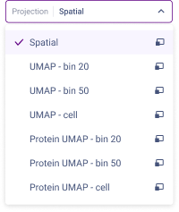
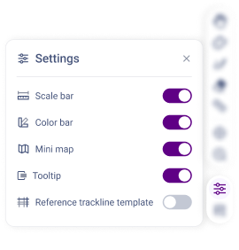

Navigation for Visual Explore
Accessing Visual Explore
StereoMap's Visual Explore module can be accessed from the start page.

Load the Dataset
Open StereoMap and click Visual Explore to open your file system, and select .stereo file to load the dataset (see Visual Explore Input Files for more information).


To switch to a different dataset, simply click the logo in the top-left corner and select "Open New File". This will allow you to load a new dataset and start a fresh analysis.

Visual Explore Interface
The following image shows the layout of the Visual Explore interface.

You can also collapse the left-most sidebar by clicking  to maximize your workspace, giving you more room to focus on your analysis.
to maximize your workspace, giving you more room to focus on your analysis.
Dataset Information

The Dataset Info  provides overview about the current dataset, helping you quickly understand its source and essential statistics. This section is divided into two parts: Analysis and Statistics.
provides overview about the current dataset, helping you quickly understand its source and essential statistics. This section is divided into two parts: Analysis and Statistics.
Note: The dataset information is only fully available when loading data using a .stereo file.
Analysis: Displays fundamental dataset information, such as the Stereo-seq chip SN, Stereo-seq product kit version, species, tissue type, software versions, etc. This allows you to trace the data's origin and processing workflow.

Statistics: Provides statistical data for both the Bin and Cell matrices, including gene type, MID count, and cell count.

If your dataset comes from a Stereo-CITE product or Stereo-seq N FFPE with microbiome analysis, you can expect to see multi-omics data. You can switch between different omics in the Statistics section to view their respective data insights.

If image data was not used in the SAW analysis, you can switch to the All bins option to view the full chip’s spatial matrix statistics.

If your dataset comes from
SAW aggrpipeline, you can see information about multiple slices.


Display Mode

The Display Mode feature provides three ways to visualize your data, each designed for different analysis needs:
- Feature Mode – Colors bins/cells based on the expression level (MID count) of the selected gene, protein, or microbe.
- Group Mode – Colors bins/cells based on cluster, cell annotation, or manually group assignments to visualize different classifications.
- Selection Mode – Allows you to filter specific bins/cells using formulas and save them as a new group for further analysis.
When switching between display modes, the data shown in the workspace will update accordingly.
Feature

Feature mode lets you explore expression patterns of specific genes, proteins, or microbes in your dataset. It displays how features are expressed and distributed across tissue.
Types of Feature Lists:
- SAW-Generated Lists: These lists are automatically created by the SAW pipeline, displaying all detected features and their statistics, organized by omics type. If your dataset includes multi-omics data, you'll see multiple lists. Due to differences in bin coverage, the content of Bin and Cell lists may differ slightly. Bin's feature lists (e.g., bin10, bin20) include feature name, MID count, and E10 score (spatial enrichment), while Cell's feature lists show the number of cells expressing instead of the E10 score. A higher E10 score indicates that the feature is more spatially clustered.
- Custom Lists: Here, you’ll find features that you’ve manually selected. These are separate from the SAW-generated lists for easy access. If your custom list includes features from different omics, you can switch the omics tag to view the corresponding heatmap.

Selecting Features and Creating a Feature List:
- Quick View: Click on a feature to display its heatmap in the workspace. Hold
Ctrlto select multiple features (even across different rows) and view their combined heatmap. If you’re interested in viewing how features are spatially co-expressed, refer to Co-expression of Selected Genes for more details. Creating a Feature List: There are three ways to create and add features to a custom list:
- Create a new list or upload one: Click
 New feature list at the bottom to create an empty custom list or click Upload to import an existing list.
New feature list at the bottom to create an empty custom list or click Upload to import an existing list. Add from the SAW-generated list: Hover over a feature in the SAW-generated list and click the
 icon to add it to a custom list. If multiple features are selected (by holding
icon to add it to a custom list. If multiple features are selected (by holding ctrl) , click and choose "+ Add the selected to feature list" to add them all at once.
and choose "+ Add the selected to feature list" to add them all at once.
Add from the Search bar: The search is case-insensitive. Use checkboxes
 to select multiple features, then click the button next to the Feature title to add them all to a custom list.
to select multiple features, then click the button next to the Feature title to add them all to a custom list.
- Create a new list or upload one: Click
Download Feature List: You can click
 to download your custom feature list for re-import or any other use as needed.
to download your custom feature list for re-import or any other use as needed.


Group
Group Mode lets you explore spot and cell classifications in your dataset. A cluster refers to a collection of bins or cells that share similar characteristics; a group is a collection of these clusters. This mode helps you organize and visualize the different classifications within your data.

Types of Groups
- SAW-Generated Groups: These groups display Leiden clustering results from various bin sizes, computed by the SAW pipeline (
SAW count,SAW realign). Since clustering results depend on bin size, if clusters are not visible, try adjusting the bin size in the Bin Layer or enabling the Cell Layer. You can click (hover over the cluster will show) to change the cluster's color and name. - Custom Groups: These are groups that you create manually by defining clusters based on your analysis needs. You can change the cluster's color and name, as well as the group name for these custom groups.
- Re-cluster Groups: Display re-clustering results computed in StereoMap.

Creating Groups and Assigning Clusters
- Create a new group or upload one: Click the
 New Group button to create an empty Group, which you can then manually add clusters for classification. Or use the Upload function to import a
New Group button to create an empty Group, which you can then manually add clusters for classification. Or use the Upload function to import a .csvfile containing coordinate classification or cell annotation information. The system will automatically generate the corresponding Group and clusters based on the file’s content. - Use the Lasso Tool: Select the Lasso tool from the Mouse Tool options and draw a boundary around your region of interest. The bins or cells within the selected area can be saved into a cluster and added to the designated Custom group.
- Use Selection Mode: In Display Mode, switch to Selection Mode to filter bins or cells based on MID values or clustering/grouping criteria. Save the filtered results to a cluster, which will then be stored in the specified Custom group.

Download Group and Matrix
For groups, you can download your data in different formats. Each option is designed for specific needs, whether you're working with spatial bin clusters or detailed expression matrices.

CSV: Comma-separated text file with x and y coordinates and bin clusters. You can also download
.csvfor differential expression analysis, which will include additional details on how clusters are compared. This option is especially useful for large datasets, allowing you to pass grouping information to SAW for server-based analysis.

GEF: HDF5 format spatial feature matrix with feature IDs, x and y coordinates, MID counts, etc. The
.geffile can store the matrix at multiple bin sizes, so when you download the matrix, you'll be prompted to choose your desired resolution(s).

- GEM: TSV format matrix with feature IDs, x and y coordinates, MID counts, etc. Each
.gemfile only holds the matrix at a single bin size.


- H5AD: H5AD format file containing annotated data matrix, spatial coordinates, and metadata.
- H5MU: H5MU format file containing feature expression, spatial coordinates, and metadata from multiple samples or slices.
Clustering and Differential Expression Analysis
StereoMap 4.3 now supports local Clustering and Differential Expression Analysis—unlocking advanced, on-site data processing without external pipelines.
Under Group mode, you can select bins/cells of interest and re-cluster them or perform differential expression analysis, enabling deeper insights into specific subpopulations.
Spatial reclustering
Select your desired clusters in the Group and click the Clustering button—this will merge all selected bins or cells for analysis. In the pop-up dialog, choose the appropriate omics (if needed), adjust your clustering parameters, and run the analysis using your local resources.
If you're working with a very large number of spots, consider using the SAW pipeline to ensure you have sufficient computing resources.

Differential expression analysis for custom clusters
You can perform differential expression analysis on your selected clusters. In Group mode, select the clusters you want to analyze and click the Differential Expression Analysis button. In the pop-up dialog, choose your analysis mode (either Label vs. Labels or Label vs. Others ). The results will then be displayed in the Data Panel at the bottom right. See Differential Expression Analysis for more information.

Selection
Selection mode allows you to filter bins or cells based on feature MID counts or cluster memberships. A rule should contain only one filtering logic (AND/OR). To use both AND and OR, please click New ruleset and define a logic between rules.

Click save to a custom label and group. You can check your saved result in Group mode.

Projection & Layers

Projection
Projection lets you choose how to visualize your spatial data—either in its original spatial layout (Spatial) or through a UMAP representation.

The default Spatial view displays bins/cells in their actual physical coordinates, while various UMAP options (like UMAP-bin, UMAP-cell, etc.) provide a dimensionality-reduced representation. This flexibility helps you explore spatial relationships and clustering patterns from different perspectives.
| Projection Type | Group Mode | Feature Mode |
|---|---|---|
| Spatial (default) |  |  |
| UMAP-bin N |  |  |
| UMAP-cell |  |  |
Inter-window analysis
If you'd like to view a projection in a separate window, simply click on the right side of each projection. The opened windows can be linked for inter-window analysis, which is driven by selecting clusters or related features across different omics. For cluster-based linkage analysis, please refer to the "Microorganism and Host Genes" documentation. For multi-omics feature linkage, check out "Spatial Distribution of Proteins and Their Corresponding Marker Genes" for further details.
Layers
The Layer menu controls how your data is displayed in the workspace by providing up to three independent layers: the bin layer, cell layer, and image layer.

- Bin Layer: Visualizes tissue regions as square bins. It is good to identify spatial patterns at the tissue level and analyze regional biomarker expressions.
- Cell Layer: Displays spatial dataset in single-cell resolution which is ideal for exploring cell-level spatial relationships.
- Image Layer: Shows reference microscope images (H&E/ssDNA/etc.) in the same orientation with the matrix. It correlating analytical results with tissue morphology.
Visibility control
- Click the
.svg>) /
 next to any layer name to toggle its display. Multiple layers can be visible simultaneously.
next to any layer name to toggle its display. Multiple layers can be visible simultaneously.
Layer activation control
Each layer can be adjusted independently, just like in Photoshop or typical graphic editing software, where your edits affect only the selected active layer.
- Layer activation ≠ visibility: You can only edit shown layers.
- The yellow-highlighted layer receives all edits and adjustments.
- Click the layer name (not the
| Layer Status | Visibility and Activation |
|---|---|
 |
✓ Show |
 |
✓ Show |
 |
— Hide — Inactive |
Layer-specific adjustments:
Each visualization layer offers tailored controls for its data type.
| Bin layer | Cell layer | Image layer |
|---|---|---|
 |
 |
 |
Most adjustments are standard—just note some key settings:
- All bins/Bins under tissue:
- Contains
.stereodata fromSAW countorSAW realign. - You might see the All bins on the top of the layer, if the .stereo file has no image information. You can choose this tab to lasso the tissue area again.
- Contains
- View bin/cell as:
- Toggle between Heatmap and Cluster
 displays to switch bins between quantitative gradients and categorical groupings, automatically updating the Display mode.
displays to switch bins between quantitative gradients and categorical groupings, automatically updating the Display mode. - Multi-colored mode is available only when displaying a custom feature list. In this mode, you can assign individual colors to each feature, enabling you to compare and contrast their spatial locations in the workspace.
- Toggle between Heatmap and Cluster
- Color range: By default, the range spans from 0 to the highest MID count for the selected bin size/cell. You can customize this range to better highlight bins within a specific feature expression range.
- Bin size: Changing the Bin size updates both the workspace appearance and the clustering results. If no groups exist for the given bin size, bins will appear in a uniform default color. Not available under Cell Layer.
- Style of bin: Spatial projection only. Choose how to display a tissue region overlay as a separate, uniform color layer. This setting does not alter the square shape of the bins.
- Style of cell: Spatial projection only. Adjust the cell representation to show boundaries only, filled, or both.
Image layer work a bit differently— they let you overlap multiple images to view them together. Simply click
to toggle its visibility.Normalization simultaneously adjusts brightness and contrast to optimize the image's visibility. Also, enhance trackline visibility. The computation formula is:

{kind=link}
{kind=link}
{kind=link}
Split View
Split View enables side-by-side comparison of data distribution across labels or clusters, which is ideal for visualizing expression differences across biological conditions, cell types, or spatial regions.
Click Split  to activate. A dropdown appears listing all available groups for the currently active layer and its selected bin size. Select a group to split the current projection (UMAP or Spatial) into individual subplots assigned by one per label/cluster within that group. An unlabeled subplot is automatically added in the last if some spots are not assigned to any label/cluster.
to activate. A dropdown appears listing all available groups for the currently active layer and its selected bin size. Select a group to split the current projection (UMAP or Spatial) into individual subplots assigned by one per label/cluster within that group. An unlabeled subplot is automatically added in the last if some spots are not assigned to any label/cluster.


Workspace & Tools
Workspace
The workspace is the core interactive working area that serves 3 main functions:
- Displays all overlaid layers (bin layer, cell layer, image layer) and supports multimodal data exploration.
- Enables direct data manipulation through floating tools (mouse tools, zoom controls, etc.) and dynamic view adjustments via control panels (display mode, projection and layer panels).
- Integrates aids such as minimap, color bar, and scale bar to ensure precise spatial positioning and accurate data interpretation.
Mouse Tools
| Tool | Function | Operation | Typical Use |
|---|---|---|---|
 Pan Pan | Quickly move around the view. | Hold left mouse button and drag; or hold Space | Browing large tissue areas. |
| Lasso | Select ROIs or custom areas. Multiple selection shapes are available. The bins or cells within the selected ROI will be saved to a Group. To reuse a previous ROI, simply click  of Shapes and reload your desired selection. of Shapes and reload your desired selection. See Characterize Substructure and Generate New Heatmap or Region Annotation Based on H&E Image for more about lasso function. | Press left mouse button and outline the area | Selecting large custom regions for analysis. |
 Brush Brush | Paint ROI regions manually. | Press left mouse button and paint | Refining selection. |
 Eraser Eraser | Remove ROI regions manually. | Press left mouse button to erase | Correcting or adjusting existing masks. |
 Measure Measure | Measure distances in milimeters. | Left click the start and end points | Checking dimensions or verifying scale |
{kind=link}
Zoom Controls

 Auto-fit view is used to center the view and auto-adjust zoom to display the entire tissue.
Auto-fit view is used to center the view and auto-adjust zoom to display the entire tissue. Zoom by dragging the slider or clicking the icons.
Zoom by dragging the slider or clicking the icons.
Settings
Settings control the visibility of floating elements in the workspace, including the scale bar, color bar, floating info (tooltips), minimap, and reference trackline template.
{kind=link}

Reference trackline template is useful in checking whether the microscope-acquired tracklines are accurately overlaid with the reference tracklines derived from a sequencing-based spatial feature expression matrix. See Check Image Alignment for more information.
Export
.png)
Click to save the current workspace view as an image file (PNG). Choose between PNG, a quick screenshot (capturing the visible area at screen resolution), or HD PNG, a high-resolution HD image for detailed visuals.
{kind=link}

Customize the background color (e.g., transparent or choose from color palette) to suit your needs. Upon clicking Export, your file system will open to let you select the save path and filename. This feature ensures flexible image output for reports, presentations, or further analysis.
Data Panel
The Data Panel dynamically displays Differential Expression (DE) Analysis results based on the currently selected group and spatial bin size.

- Click adjacent to the feature name in the table to save that feature to a custom feature list, enabling batch management for further downstream analysis.
- Click to export the table as a CSV.
- If your dataset comes from
SAW aggrand you specify the experiment condition (--group-by-deg) for differential analysis across common clusters in slices, the data panel will display the corresponding differential expression (DE) results. You can then use the region dropdown menu to switch between clusters and explore the DE results under the selected experimental condition.
{kind=link}
{kind=link}